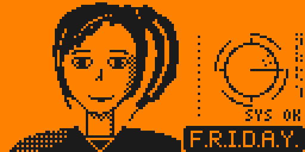
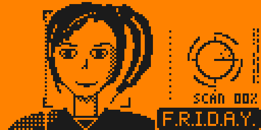
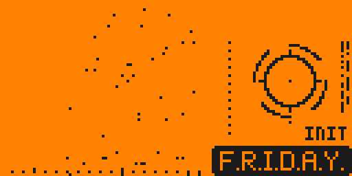
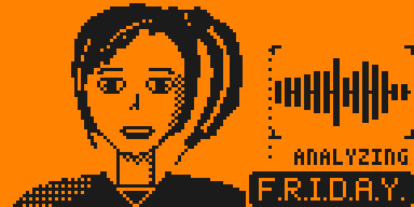
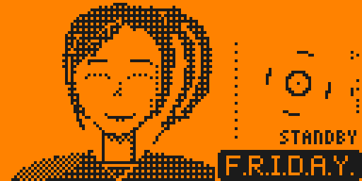
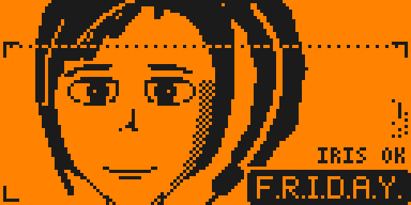

F.R.I.D.A.Y. — Desktop-Animationen
Jede GIF zeigt erst den Idle-Teil, dann die Reaktion auf einen Tastendruck.

1 · Idle — blinzeln, Seitenblicke, Haare, HUD-Ring · Taste: „HEY!“, Grinsen, Zwinkern

2 · Scan — Zielrahmen, Scanlinie, Fortschritt · Taste: LOCK → MATCH, Lächeln

3 · Hologramm-Boot — materialisiert sich, Glitch, ONLINE · Taste: Glitch-Burst, Zwinkern

4 · Sprechen — Mundbewegung, Equalizer, Untertitel · Taste: sie lacht

5 · Standby — gedimmt, Augen zu, atmet · Taste: wacht auf

6 · Nahaufnahme — Iris-Scan, Blicke · Taste: ALERT, Grinsen, Zwinkern